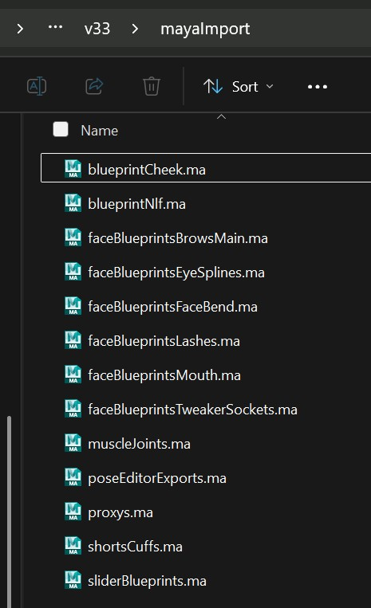

Model Change
Kangaroo has lots of good tools for dealing with model changes. This document gives you an overview of what tools you can use in different situations.
Same Topology - Different shape
When the topology and proportions are the same, things are relatively easy.
LoadDeformer() will load the files without issues since (by default) it's just loading by vertex order.
But blendShapes, such as in ShapeEditor or PoseEditor need some attention.
Same Topology - PoseEditor
See Pose Editor Model Update
You might be able to use the blendShape option. But if not - the warp option should work just fine, too.
Same Topology - Shape Editor model update
Same Topology - Other Target geos
Any other mesh you can just warp with the Geometry Tools
Topology change
Topology change - loadDeformers()
In the loadDeformers() can probably handle it on its own. Check when to not use Deformer Import Tool.
Topology change - PoseEditor
See Pose Editor Model Update
The warp option will do the trick here.
Note
In some cases when meshes got split into more meshes, you may have to do a few different hacks such as using the TOOLS -> wrap option
Topology change - Shape Editor
This is a bit of a manual hack, but not too bad. Check here
Topology change - Other Target geos
Any other mesh you can just warp with the Geometry Tools
Topology change - Custom Attachers
Custom attacher setups in the Puppet tool should be fine in most cases. Unless you specified a vertex.
More infos on Custom Attachers
Warning
It's easy to forget adjusting the vertex id! You'll know if later some ctrls suddenly fly around when you rotate some irrelevant ctrl. And for future consider not assigning vertex ids. They should only be done when really needed.
Different Mesh Names
Different Mesh Names - Deformers
If just one or two mesh names changed, check when to not use Deformer Import Tool.
But if you have a ton of different meshes, it might be worth looking at Load Best Fitting SkinClusters
Different Mesh Names - Custom Attachers
If you've used the custom attachers in the puppet tool, that's also a bit more manual setup at this point. You could open the puppet.rig file and text/replace if you are careful.
Different Mesh Names - Face Rig
If you have a face rig, you'll have to do more manual setup inside the build folder functions, adjusting names etc.
Recommendation
If you've already rigged the Face, try to push back on modeling if they want to change the mesh names! Very likely it'll be less trouble for them to keep a bad name than for you having to change name in all of the setups.
Different Proportions
Different Proportions - Blueprints
For different proportions you'll need to adjust the blueprints in the puppet tool.
If the topology is the same, you can use the warpXforms tool to
warp the blueprint rig to the new model.
Different Proportions - Shape Editor
If the topology is also different, it's more complex. It's like creating a new character - check Shape Editor
Different Proportions - Face
And then basically every blueprint group in the mayaImport folder needs to be warped to the new mesh.
Maya Import Folder
It's also good practise to go through all the files in the mayaImport folder and check one by one to see which needs to get updated.
Especially when you've created a Face Rig, you might have a few files in there!
